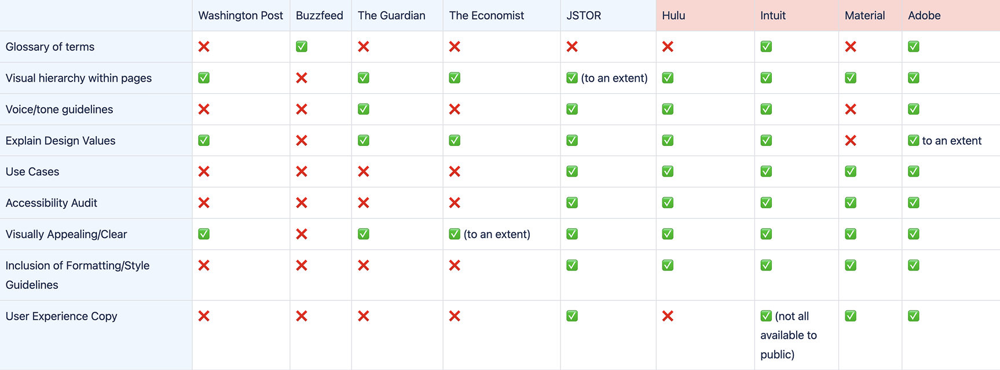
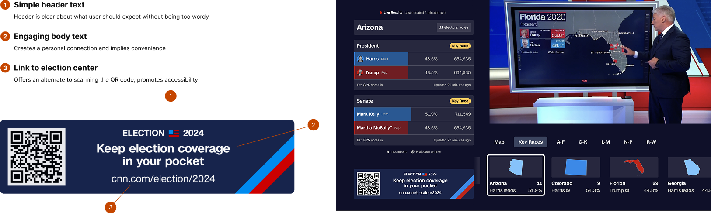

CNN · Content Design Intern · Summer 2024
designing for millions,
with one shot to get it right.
How I built CNN's first content design guidelines from scratch and shipped election center work seen by millions in 11 weeks, during one of the most high-stakes news moments of the year.
tldr; the outcomes
1st
content design guidelines ever created for CNN digital
3
platforms shipped — web, mobile, Smart TV
M+
viewers reached through election center and TV banner
The problem
A newly integrated team with no standardized guidelines.
CNN's content design team had just been integrated across the organization without centralized guidelines or standards due to being a lean team. Different teams used different voices, different visual approaches, and different content hierarchies, which led to fragmented internal & external user experiences.
My job: figure out what good content design looked like at CNN, document it, and help the team move faster together with a shared language.
No guidelines meant
Inconsistent voice across platforms
Duplicated effort across teams
Slow review and approval cycles
New team members had no onboarding resource
The constraints
11-week timeline, election coverage looming
9 users across 7 departments to align
Balancing editorial voice with product needs
Guidelines had to work across web, mobile, TV
Research
9 users. 7 departments. 2 weeks.
30-minute sessions each.
I interviewed CNN digital employees across multiple teams. Internal user research was critical: these weren't abstract users, they were the people who would use whatever I built.

Competitor analysis of content design guidelines between direct and indirect competitors.
"Every team was doing their own thing. There was no shared definition of what 'good' content looked like at CNN."
— Research synthesis, June 2024
Content guidelines
CNN's first content design guidelines built from interviews, not assumptions.
I synthesized research findings, analyzed existing resources and competitors, and developed data-driven recommendations for a single source of truth: guidelines that would standardize practices, improve cross-team collaboration, and reduce review friction.
CNN Digital — Content Design Guidelines
First content design standards ever created for CNN digital · Summer 2024
NDA
01
Content principles
Core values and why each one matters to CNN's brand and audience trust.
02
Dos and don'ts
Paired examples covering voice, tone, hierarchy, and formatting and every guideline shown in practice.
03
Use cases per guideline
Multiple real-world applications for each rule so teams can apply them across different content types and contexts.
04
Team-specific guidelines
Tailored standards for each team's content surface.
05
Consistent page structure
Every section follows the same hierarchy so it's fast to navigate, easy to onboard from.
06
Roadshow to full staff
Present across 7 departments to establish a shared source of truth. Not just a doc, but an org-wide alignment moment.
Built from 9 user interviews across 7 departments · ZeroHeight
CNN's first ever content design guidelines
Key decisions
I led a prioritization workshop to understand impact vs. effort. Rather than trying to document everything, I focused on the highest-frequency decisions that teams were making inconsistently. Voice and tone first, because that affected every piece of content.
Election Center
A living product. Iterated weekly
through the entire election cycle.
The Election Center wasn't a single design but a product that changed shape as the election timeline evolved. I iterated on layouts and information hierarchy weekly, presenting to engineers and product leaders to build buy-in for user-centered changes while balancing business objectives.
The core design challenge: what users needed to know shifted as the election got closer. Early coverage needed context and education. Closer to election night, it needed speed and results.
Early cycle. Education-first, contextual, built for users still learning the candidates and issues.
Election night. Results-first, fast, built for users who need a single definitive answer.
Design intent
intent
Video content on the far right to align with the F-pattern of scanning
why
Satisfies business requirement for video growth while capturing attention as users finish scanning a line of text.
intent
Weighted grid transitioning to an even grid for news and media
why
Higher content density encourages exploration behavior and increases pages per session.
intent
Bipolar comparison layout to facilitate rapid information retrieval
why
One month out, users shift from curiosity to decision-making. Side-by-side comparison reduces the need to exit the site.
intent
Financial information grouped in two data styles: text and numbers
why
A layer of objective data balances subjective campaign content above, maintaining CNN's source-of-truth identity.
Designing mobile first
Majority of CNN users were on mobile, so my mentor pushed me to start small and scale up rather than the other way around. The goal wasn't to create a separate mobile experience. It was to make sure the hierarchy held up at every size. Same content priority, same information architecture, just stacked. A fragmented experience across breakpoints would have broken the trust users had in CNN as a source of truth during a high-stakes news moment.
What actually shipped
My designs didn't ship directly but I learned that's normal. A lot of hands touched the work and the final product was a synthesis of many perspectives over time.
What I took away was less about the pixels and more about the process. I learned how editorial priorities, user needs, business timelines, and engineering constraints all impact design simultaneously. I learned to present work and defend my design rationale. And honestly, I learned to not take it personally when something I made didn't make the cut.
Smart TV banner
One banner in millionsof living rooms.
I designed audience-focused messaging for CNN's Smart TV election banner by analyzing what would genuinely motivate action, not just inform, but create urgency that felt relevant to the viewer at home. The copy strategy was deliberately simple: one clear header, one line of engaging body text, a QR code and a URL for accessibility.

On the left is a breakdown of WHY certain copy and components lived in the banner. On the right is the banner on TV (Live!)
Learnings
What high-stakes, high-speed design taught me.
01
Content design is systems design.
Building guidelines isn't just writing words but creating a system. The hardest part wasn't writing the rules, but deciding what order to present them in so teams would actually use them.
02
Speed and quality aren't opposites if you have a system.
Rapid iteration on the Election Center worked because I was able to work with the team to understand what system they currently had in place. Without that, iteration is just guessing faster.
03
The best copy is invisible.
On the Smart TV banner, success meant a viewer didn't consciously read the copy — they just scanned the QR code. Design that disappears into behavior is harder to make than design that draws attention to itself.